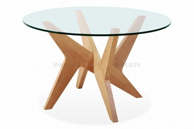
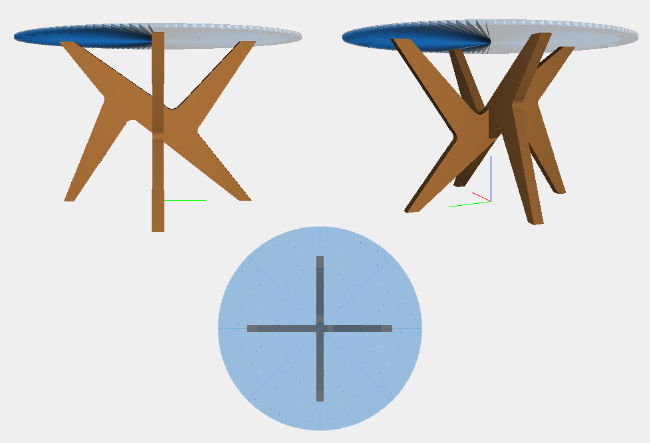
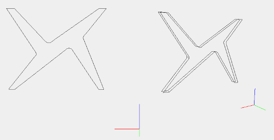
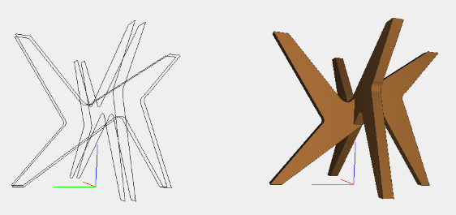
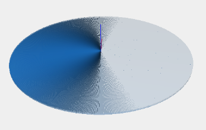

Cross Pedestal Table
The Original
An innovative solid wood base and tempered glass table top are combined to produce Matthew Hilton’s stunning Cross Pedestal Table. The asymmetrical base made of solid alder wood, is fitted with rubber connectors on which the glass table top sits. This beautiful design would complement both modern and traditional interiors.
The Model
The Base
With bezier was realized the profile curve of the table. The model of the base product was copied and rotated 90 degrees obtaining:
The function creates the base in a parametric way than the thickness of the wood:
/* Funzione che crea il telaio in modo parametrico rispetto allo spessore del legno */
var telaio = function(spess) {
...
...
...
var telaio1 = TRANSLATE([0,1,2])([-3.364,-spess/2,-1.586])(STRUCT([laterali,supA,supB]));
var telaio2 = ROTATE([0,1])(PI/2)(telaio1);
var telaioTot = COLOR(marroneChiaro)(STRUCT([telaio1,telaio2]));
return telaioTot;
}The Glass
The glass was constructed using as main function 'arc' and EXTRUDE.

/* Arco di circonferenza bidimensionale parametrico rispetto a due raggi
r = raggio minore, R = raggio maggiore, alpha = arco di circonferenza */
function arc (alpha, r, R){
var domain = DOMAIN([[0,alpha],[r,R]])([128,1]);
var mapping = function(v) {
var a = v[0];
var r = v[1];
return [r*COS(a), r*SIN(a)];
}
var model = MAP(mapping)(domain);
return model;
}
/* Vetro circolare di raggio r e spessore s */
var vetro = function(r,s) {
var vetro = COLOR(vitro)(TRANSLATE([2])([3.274])(EXTRUDE([s])(arc(2*PI,0,r))));
return vetro;
}